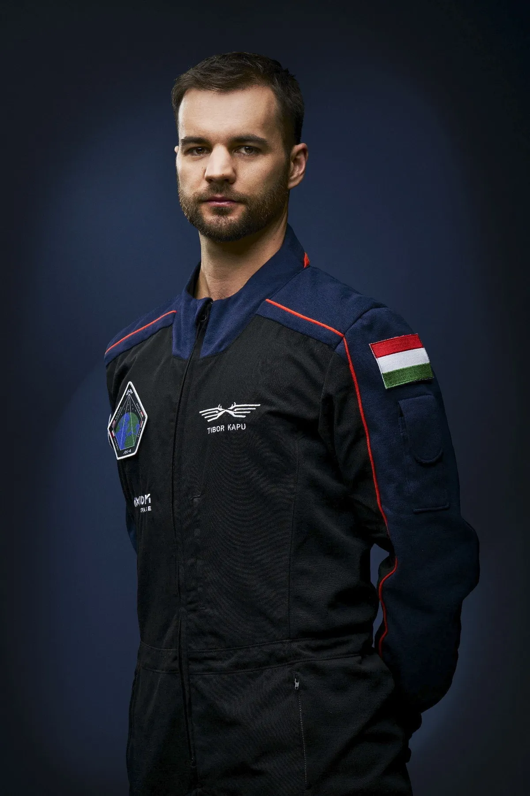

Kapu Tibor
Kapu Tibor magyar mérnök, pilóta és a HUNOR – Magyar Űrhajós Program kiválasztott űrhajósa. Repülőmérnöki diplomát szerzett, emellett tapasztalt kisrepülőgépes pilóta. 2023-ban több száz pályázó közül választották ki, hogy részt vegyen az Európai Űrügynökséggel közös kiképzésben, amely a túlélési gyakorlatoktól a műszaki és orvosi felkészítésig számos területet érint.